f(x) = exp(-x^2/2)
plot(f, -3, 3) # plot f over [-3,3]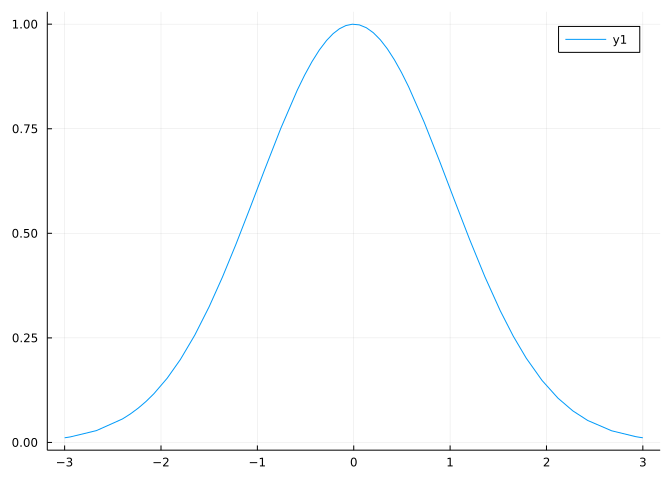
A notebook for this material: ipynb (Pluto html) (With commentary)
The Julia language is a new language and as such, certain design decisions are still being made. One key decision is the interface for creating graphics. At this point there are many different ones (Makie, PyPlot, plotly, plotlyjs, GR, Winston, Gadfly, Gaston,…), and perhaps more will be generated before a dominant one is arrived at. As such, we don’t try to teach the details of any one of them.
Currently, the the Plots package provides a unified interface to many backend plotting packages. We will use the Plots package in these examples.
For the impatient, this is all that is needed to know to get up and running.
using MTH229
using PlotsThen, graphing a function is as easy as specifying the function and the domain to graph over, e.g.:
f(x) = exp(-x^2/2)
plot(f, -3, 3) # plot f over [-3,3]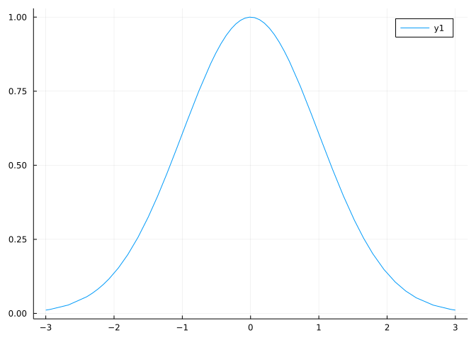
The default graphics of Plots are static. Adding one additional call, plotly(). will use an interactive backend for Plots which will show the (x,y) position of points on the graph when a mouse hovers over them. (The default can be re-loaded by the command: gr().)
Graphs can be layered by using the plot! function (with an exclamation point indicating a current graph is begin modified):
f(x) = cos(x)
g(x) = 1 - x^2/2
plot(f, -pi/2, pi/2)
plot!(g) # the domain to plot is optional if adding a layer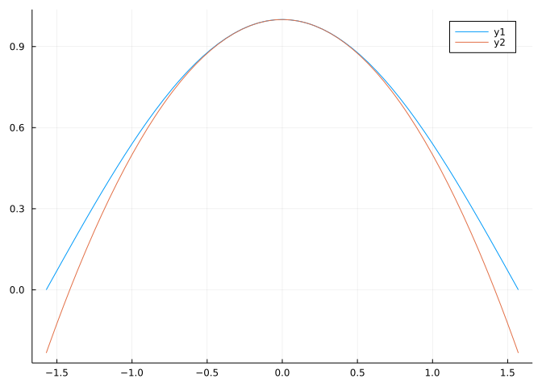
For the more patient, the rest of the sections cover some additional details including how to specify a graph by defining the points that are used to make the plot.
The most basic usage for plotting a function follows this pattern:
plot(function_object, from, to) # or plot(f, a, b)as in
plot(sin, 0, 2pi)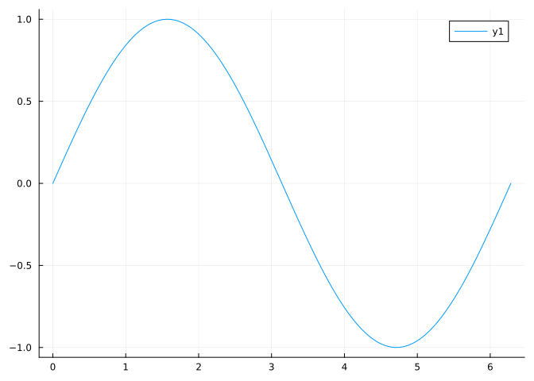
That creates the graphic. The Plots package is an interface to several plotting “backends.” Within IJulia and using plotly() the graph will be automatically displayed as an SVG graphic that allows you to zoom and pan with the mouse.
This is another example of a general template action(function_object, args…) for performing some action on a function. In this case, the action is to plot a function and the additional args… indicate the domain to plot over.)
Again, we plot a function, this time a basic polynomial:
f(x) = x^2 - 2x + 2
plot(f, -3, 3)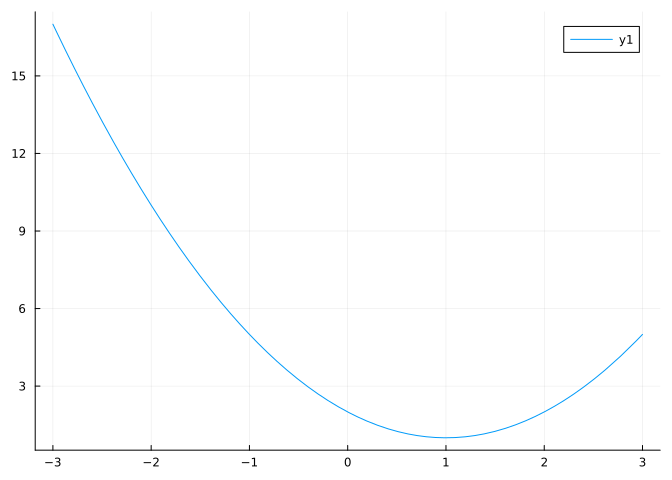
A graph can have layers added to it using plot! or other such functions. For example, adding the function zero will emphasize the x axis:
f(x) = x^2 - 2x + 2
plot(f, -3, 3)
plot!(zero) # x axis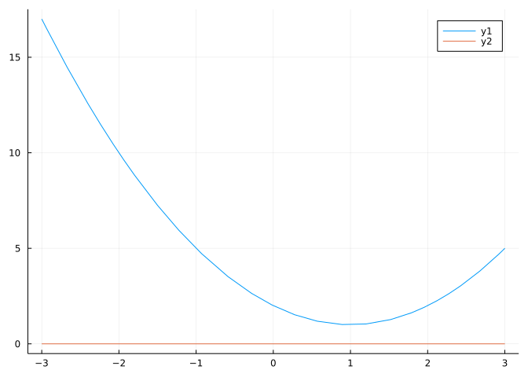
The automatic legend can be supressed by passing the argument legend=false to the initial plot command.
Adding points can be done with the scatter! command. We put the x and y values into containers defined by []. For example, the polynomial \(x^2 - 3x +2\) has roots at \(2\) and \(1\), we emphasize this through:
f(x) = x^2 - 3x + 2
rts = [1, 2]
plot(f, 0, 3)
scatter!(rts, [0, 0])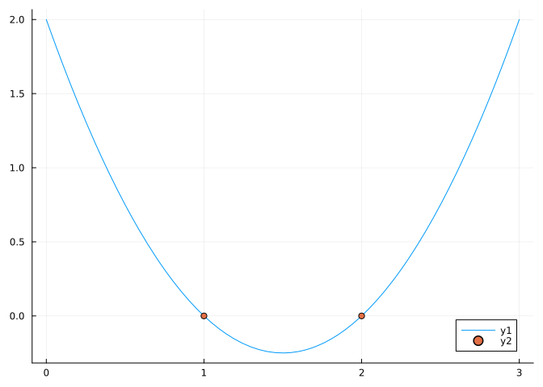
Plots plots functions by creating a large number of paired points \((x, f(x))\); it then plots these points; and, finally, connects the points with line segments. In the numerous function evaluations, it is of course quite possible that some of the points will return Inf or NaN. (Where Inf is a floating point value for infinity and results from evaluations like 1/0 and NaN stands for “not a number”, and results from indeterminate evaluations such as 0/0.)
The values which are Inf can not reasonably be plotted. Values which are NaN can not reasonably plotted. What to do? Such points are simply not plotted, and no line segments are drawn causing the plot to be discontinuous. This convention can be utilized to good effect.
For example, to create bounded graphs, we can trim out any large values and replace them with NaN. A function that can be used to modify an arbitrary function (like \(f(x) = 1/x\)) and return a function that can be plotted can be defined as follows:
trim(f; val=10) = x -> abs(f(x)) > val ? NaN : f(x)trim (generic function with 1 method)This action is very similar to clamping.
The MTH229 package implements this in the function rangeclamp(f, hi=20, lo=-hi). (Base julia has a clamp function.)
Using rangeclamp is fairly simple. The output is a function, so can be passed directly to the plot call:
f(x) = 1/x
plot(rangeclamp(f), -3, 3)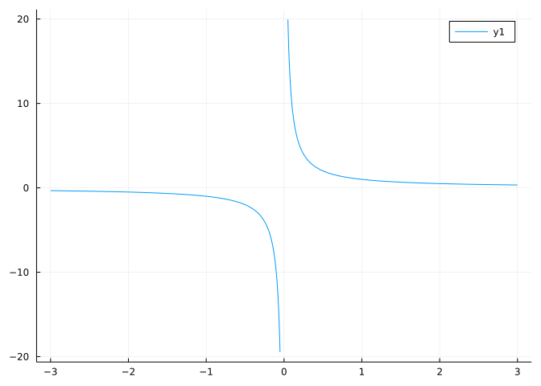
Or
plot(rangeclamp(f, 100), -3, 3)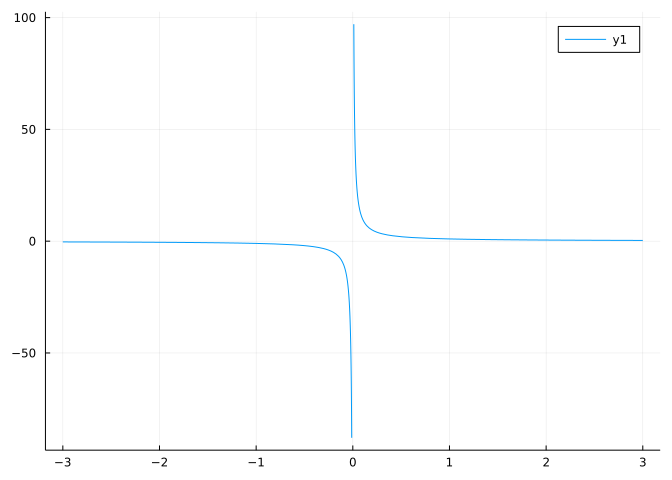
This trimming also works when Inf and -Inf values are encountered, as both can be ordered by >.
Consider a function with a parameter, theta, defined by:
function g(x; theta=pi/4)
a = 200*cos(theta)
tan(theta)*x + (32/a)*x - 32*log(a/(a-x))
endg (generic function with 1 method)Plotting g will use the default value of \(\pi/4\). To plot with a different value, say \(\pi/3\) we can create a new function:
f(x) = g(x, theta=pi/3)
plot(f, 0, 100)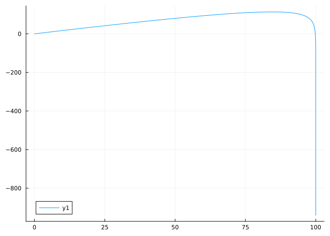
Which works, but is a bit verbose. It would be more convenient to use an anonymous function, to bypass the creation of a throwaway function:
plot(x -> g(x, theta=pi/3), 0, 100)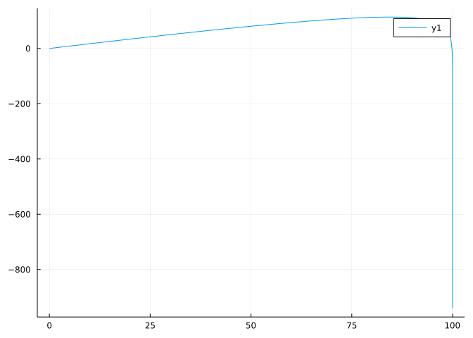
There are many instances where plotting with anonymous functions are convenient. It can be hard to get used to seeing that arrow, but it can simplify many expressions if used properly.
Plot the function \(f(x) = x^3 - x\) over \([-2,2]\). How many zeros are there?
Plot the function \(f(x) = x^3 - x\). When is the function positive?
Plot the function \(f(x) = 3x^4 + 8x^3 - 18x^2\). Where (what \(x\) value) is the smallest value? (That is, for which input \(x\) is the output :f(x) as small as possible.
Plot the function \(f(x) = 3x^4 + 8x^3 - 18x^2\). What is the smallest value?
Plot the function \(f(x) = 3x^4 + 8x^3 - 18x^2\). When is the function increasing?
A rational function is nothing more than a ratio of polynomial functions, say \(f(x) = p(x)/q(x)\). One interesting thing about such function is there can be asymptotes. These can be vertical (which can happen when \(q(x)=0\)), horizontal (as \(x\) gets large or small), or even slanted.
The vertical asymptotes require care when plotting, as the naive style of plotting where a collection of points is connected by straight lines can render poor graphs when the scale of \(y\) values get too large. The really large values plotted near the asymptote can wipe out the possibility of seeing other features of interest in a graph.
Some features of interest for a graph that are identifiable by calculus concepts are:
For example, if you want to find zeroes of a function, you really want to look at areas of the graph where the \(y\) values are close to \(0\). However, if you have a vertical asymptote on the same graph, the \(y\) values might also be asked to show very large or small values. With only a finite number of pixels available, it is impossible to easily do both.
What to do? If you were on a smartphone, you might be tempted to pan around to avoid the asymptotes, then pinch and zoom narrow the graph to the feature of interest. With julia you basically do the same thing, though panning and zooming is done by changing the domain of the \(x\) values used in plotting.
Let’s look at the function \(f(x) = 1/x\), which has an obvious vertical asymptote at \(0\).
One can try a simple plot:
plot(x -> 1/x, -3, 3)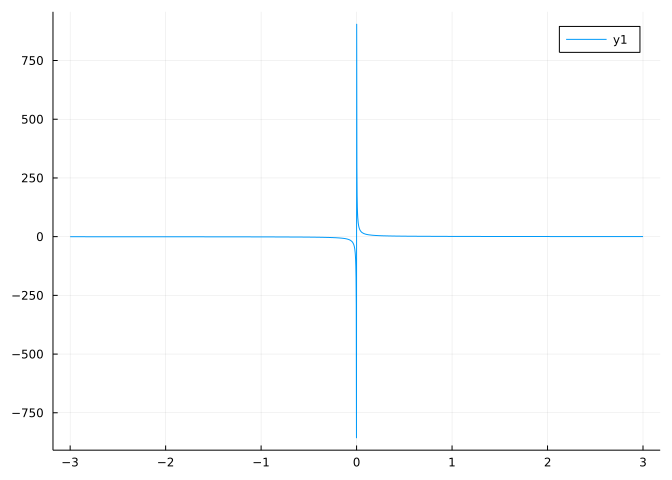
The issue at \(0\) is avoided, as the points chosen by Plots do not include \(0\). The asymptote appears as a strongly slanted line, as individual points are simply connected in a dot-to-dot manner.
Doing better without much work is done by simply restricting the part that is plotted. (Alternatively, you can use NaN values or multiple functions on one.) For this example, we can easily draw the positive part:
plot(x -> 1/x, 0, 3)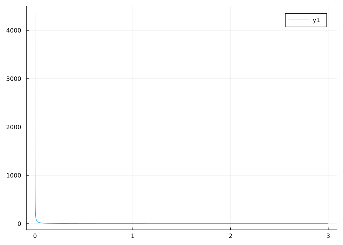
It is best to avoid the asymptote at \(0\) completely by backing away by enough to avoid the large range on the \(y\) axis. In this case, starting around \(1/10\) is reasonable:
plot(x -> 1/x, 1/10, 3)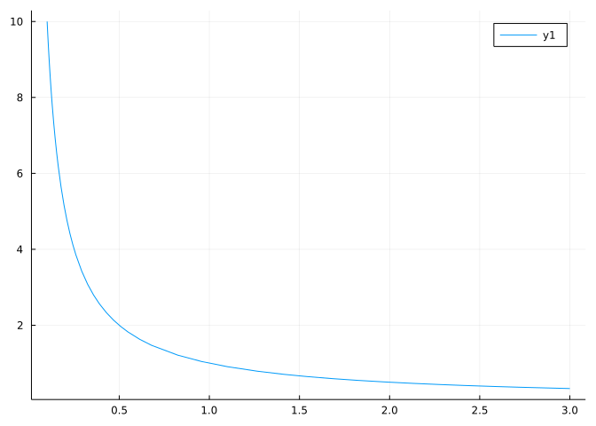
Let’s look at the rational function
\[ f(x) = \frac{(x-2)(x-3)}{x-1} \]
This will have a vertical asymptote at \(1\), zeros at \(2\) and \(3\) and a slant asymptote. A quick graph from \(-10\) to \(10\) shows just some of this:
f(x) = (x-2)*(x-3)/(x-1)
plot(f, -10, 10)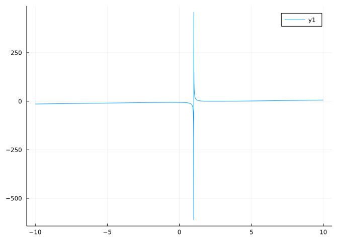
We can see the slant asymptote and the vertical asymptote, but have no chance of seeing the zeros or the local extrema. For that, we can restrict the domain to plot over.
For example, to graph to the right of the asymptote can be done with:
plot(f, 1 + 0.5, 4)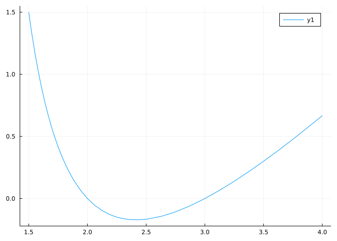
This shows the two zeros and gives an idea of the relative minimum. Similarly, a plot of the left of the asymptote can be illustrative. Here we step back by a bit:
plot(f, -3, 1 - 0.1)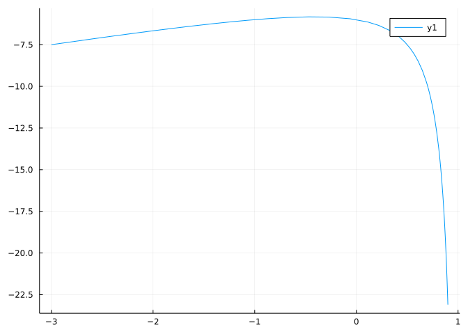
It appears that the relative maximum occurs between \(-1\) and \(0\).
Here we see what happens to the asymptote. The scale of the \(y\) values is huge. We added a small amount to the left endpoint in case the function is not defined there, but this function takes the reciprocal of a small amount and makes it huge. Clearly we need to really avoid the issue. It isn’t hard – just add a little bit more to \(0\).
One solution to avoiding this issue is to use the rangeclamp function that was previously described. This just caps off really large values so that the vertical asymptotes don’t affect the scale of the graph. We can see the asymptotes pretty clearly with:
plot(rangeclamp(f), -10, 10)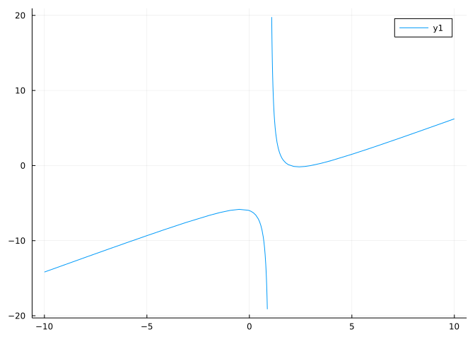
Let
\[ f(x) = \frac{5}{\cos x} + \frac{10}{\sin x}. \]
Estimate graphically the minimum value over \((0, \pi/2)\).
The domain comes from the fact that \(\sin(0) = 0\) and \(\cos(\pi/2) = 0\), so we will have asymptotes at each. A simple graph shows there are issues:
f(x) = 5/cos(x) + 10/sin(x)
plot(f, 0, pi/2)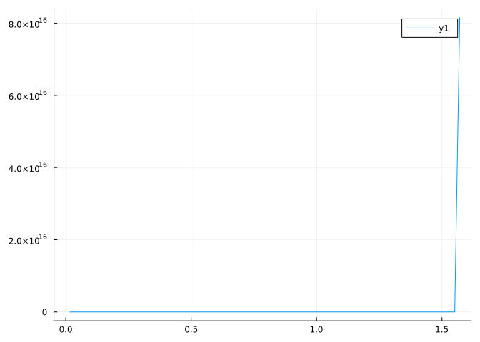
As typical with vertical asymptotes, we can’t see finer features of the graph when the asymptotes are drawn. To remedy, we again back off from the boundaries. Since \(\sin(x)\) behaves like \(x\) near \(0\), we pick delta = 0.3 again and expect a max near \(10/(3/10) \approx 33\).
delta = 0.3;
plot(f, 0 + delta, pi/2 - delta)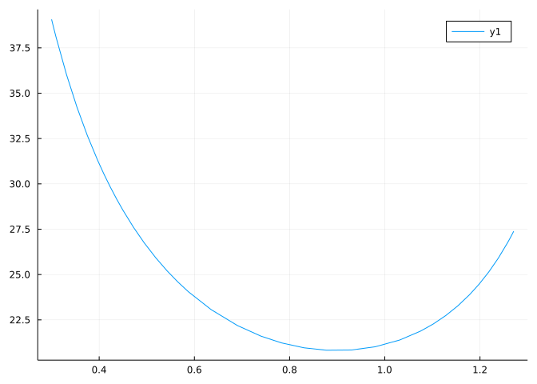
With this, we see the minimum value is near \(y=20\) and occurs around \(0.9\).
The function \(f(x) = (x^3 - 2x) / (2x^2 -10)\) is a rational function with issues when \(2x^2 = 10\), or \(x = -\sqrt{5}\) or \(\sqrt{5}\).
Plot this function from \(-5\) to \(5\). How many times does it cross the \(x\) axis?
The function \(f(x) = (x^3 - 2x) / (2x^2 -10)\) has a slant asymptote. One can find the slope of this line using algebra, but if you prefer the computer, you can graph. Define both
f(x) = (x^3 - 2x) / (2x^2 -10)
g(x) = abs(x) > 5 ? f(x) : NaNg (generic function with 1 method)then plot g over \([-20, 20]\). Using algebra or this graph, estimate the slope?
The rational function \(f(x) = (x^2 - 3x - 2) / (x^2 - 4)\) has issues at \(-2\) and \(2\). How many times does its graph cross the \(x\) axis?
When we learn how to make a graph using paper and pencil, the “T” method is employed, so called as we draw a “T” and fill in values to plot for \(x\) and \(y\).
For example, a chalkboard after the instructor shows how to plot \(f(x) = x^2\) might have this drawn on it:
x | y
------
1 | 1
2 | 4
3 | 9
4 | 16As these are the steps done to create the ordered pairs for a plot, we would like to be able to mimic the following procedures used above in julia:
We have seen how variables can be used to refer to a single value, but we want to refer to more than one value now. A container for holding such is an Array. Arrays are implemented in most all computer languages, though the term can mean different things. We are looking for vectors, or one-dimensional arrays. In general, an array is a multidimensional grid of values – all of the same type (integer, floating point, functions, …, or ANY).
For our purposes, we want vectors (one dimensional, \(n\) by 1 arrays in julia). These can be easily constructed in different ways.
[]In many different contexts, julia uses [] to create collections from individual components.
For example, to directly create a 1-dimensional array with the [] syntax one simply types in the values separated by commas:
[1, 2, 3, 4, 5]5-element Vector{Int64}:
1
2
3
4
5Or
[1, 1, 2, 3, 5, 8]6-element Vector{Int64}:
1
1
2
3
5
8These create “vectors.” Row vectors (which are arrays, but not of type Vector) are created when no commas are specified:
[13 21 34 55]1×4 Matrix{Int64}:
13 21 34 55The notation is that [a, b, c] combines a, b, and c vertically and [a b c] combines them horizontally. The former is good to make column vectors for single values (scalars).
Row and column vectors are different! We will primarily use column vectors going forward.
Containers are for like values…
In general, julia uses [ and ] to create containers for like values. These containers can be more complicated than a single row or column. One subtle thing is that each object must be of the same value, though sometimes this happens by a silent conversion. So, mixing integer and floating point numbers will produce a container of just floating point values:
[1, 2.0]2-element Vector{Float64}:
1.0
2.0A basic set of numbers used in programming are the values 1,2, …, n. These are the simplest example of an arithmetic progression or sequence, which in general can start in a different place and have steps of a size different from \(1\):
\[ a, a + h, a+2h, a+3h, ..., a + nh \]
It should be possible to specify arithmetic sequences either by
In julia the range function will do the former and the range operator the latter.
Here are 5 evenly spaced numbers from \(0\) to \(\pi/2\) given by range
range(0, pi/2, length=5)0.0:0.39269908169872414:1.5707963267948966The values are not displayed, but will be if collected:
collect(range(0, pi/2, length=5))5-element Vector{Float64}:
0.0
0.39269908169872414
0.7853981633974483
1.1780972450961724
1.5707963267948966The “range” operator, :, is used to specify a step size, like \(h\) in the definition above. To get values which step by 1 we simply specify the start and end values:
1:41:4That isn’t so impressive. The description julia uses to show this value is exactly how we defined it, but this range is specifying the values 1, 2, 3, 4. To see that, we collect the values to make an array:
collect(1:4)4-element Vector{Int64}:
1
2
3
4The range operator returns a Range object which is much more compact to store than the array. (The range object is an iterator, something to be stepped through one at a time. Iterating over the elements specified by a range does not require all the elements at once, so they are not generated.)
The range operator can also work with a step size:
a=0; b=10; h=3
a:h:b
collect(a:h:b)4-element Vector{Int64}:
0
3
6
9Notice, the value for b is treated as as suggestion, the range will stop without exceeding b.
The \(x\) values for a plot are typically a sequence of increasing values from \(a\) to \(b\). We would generally like to be able to specify the number of values to plot. This makes range the go-to choice to use.
Which command will produce the sequence \(1,3,5,7,9,11, ..., 99\)?
Which command produces 10 numbers between 0 and 10 that are evenly spaced?
Which command does not produce the numbers \(1, 2, 3, 4, 5\)?
Which command does produces the numbers \(1, 1, 2, 3, 5, 8, 13\)?
A column vector has a natural sense of first, second, …, the \(n\)-th element. This allows julia to refer to the values by index (\(1\)-based, unlike some other computer languages). So, if x is an array, x[1] is the first value in that array. One can extract and assign values using indices. A simple example is:
x = [2, 3, 5, 7, 11, 13, 17]
x[1]
x[3]5There are some special values. The end value refers to the last (\(n\) th):
x[end]17The \(n\) – or number of elements – can be returned by length:
length(x)7A range object can be used for indices:
x[1:3]3-element Vector{Int64}:
2
3
5The value end can be used in a range when indexing:
x[2:end]6-element Vector{Int64}:
3
5
7
11
13
17(But not without indexing, as you can see by typing 2:end by itself.)
Julia allows only three different types of expressions on the left side of an equals sign:
x = 42,f(x) = x^2 - 2, orx[1] = 2.The left side is quite unlike a math equation, where arbitrary expressions are typical.
Let
x = [1, 1, 2, 3, 5, 8, 13]7-element Vector{Int64}:
1
1
2
3
5
8
13What is the value of x[end - 1] + x[end]?
Let
x = [1, 1, 2, 3, 5, 8, 13]7-element Vector{Int64}:
1
1
2
3
5
8
13What is the value of x[3]?
When a vector is created, if possible, the resulting values are converted to be the same type. Let
x = [1, 2.0]
y = [1, 2.0, "three"]3-element Vector{Any}:
1
2.0
"three"For x[1] and y[1] what does typeof return?
(The y container is of type Any which allows it to hold any type of object, the x container only holds values of a certain type.)
To specify the \(y\) values we wish to “map” the function f to each \(x\) value. In julia there are many different ways to do this, we list four for completeness, but will restrict our attention to just the first three styles.
The map function. In many areas of mathematics, one refers to a function as a “map” from the domain to the range. The implication is that the function takes all the \(x\) values to the corresponding \(y\) values at once (conceptually) and not one at a time. The map function will apply the function f to each value in the array x, basically taking [x1, x2, ..., xn] and returning [f(x1), f(x2), ..., f(xn)].
For example, let’s look at the simple polynomial \(f(x) = -16x^2 + 32x\). We define our julia function with:
f(x) = -16x^2 + 32xf (generic function with 1 method)If we want to look at this function for \(x\) values between \(0\) and \(2\) we might define the \(x\) values with:
x = range(0, 2, length=5)0.0:0.5:2.0Then the map function will create the corresponding \(y\) values:
map(f, x)5-element Vector{Float64}:
0.0
12.0
16.0
12.0
0.0The syntax of map requires a slight pause. Here we do not actually call the function f, as in f(2). Rather, we pass the name of the function object to the map argument – and map calls the function for each value in the column vector x and returns a corresponding column vector.
It is also quite common to use anonymous functions with map. For example:
map(u -> 10 * u^2, x)5-element Vector{Float64}:
0.0
2.5
10.0
22.5
40.0We use u for the dummy variable in the anonymous function, so as not to get it confused with the variable x holding our values, but this is not necessary.
Julia allows a function to be broadcast over a collection of values with a simple notational trick or inserting a “.” before the parenthesis. To see, we have:
sin.([1,2,3])3-element Vector{Float64}:
0.8414709848078965
0.9092974268256817
0.1411200080598672In this use, the output is the same as though map(sin, [1,2,3]) were called. In general, this “.” notation is a bit different, as there can be multiple arguments passed and the size of the values is matched if possible by replication. For example, this command find the logarithm of 5 for different bases. The value 5 is replicated once for each of the bases:
log.([2,pi,5,10], 5)4-element Vector{Float64}:
2.321928094887362
1.4059543061897808
1.0
0.6989700043360187The “dot” broadcasting is very succinct and useful, but using map is more explicit and easier to reason about. We will mostly use broadcasting due to the simplicity.
Mathematicians are fond of set notation, as in this way to describe the \(y\) values in a graph:
\[ y = \{ f(x): x \text{ in } [0, 2] \}, \]
This is read: “the values \(f(x)\) for each \(x\) in the interval \([0,2]\).”
Here we define values xs to represent the continuum of values in the interval \([0,2]\), then use a “comprehension” to create the set notation above. The syntax is similar:
xs = range(0, 2.0, length=5)
[f(x) for x in xs]5-element Vector{Float64}:
0.0
12.0
16.0
12.0
0.0The two approaches, broadcasting/maps and comprehensions, are equally useful. Perhaps map is a bit less trouble, but comprehensions mirror a more familiar mathematical syntax and generalize to functions of more than one variable nicely. One difference to keep in mind when deciding which to use, is that broadcasting/mapping requires a function, whereas comprehensions use expressions.
Finally, for completeness, we mention another means to generate vectors of numbers that is more familiar to users of other computer languages.
The for loop is a very common pattern in computer programming. For speed reasons, some languages (e.g., MATLAB and R) try to avoid for loops for a “vectorized” approach (see below), but julia works well with for loops, and they are sometimes easier to understand than a vectorized approach.
A for loop simply loops over each value in the iterable data vector x giving it a temporary name as it goes. To use a for loop to create the \(y\) values requires several steps. The first creates a container to hold the new values, using the similar function to make a vector of the same size as x below (but fills it with nonsense):
y = similar(x);
for i in 1:length(x)
y[i] = f( x[i] )
endThe for loop ends with the keyword end. Here we loop over each index of x and assign to the corresponding y value f(x[i]).
Conceptually this is the opposite of map where we think of the function acting on the entire column vector x. Instead, we iterate one-by-one over the values of x saving the function values as we go. The use of for loops is called imperative programming, as you describe each step. The use of functions like map is called declarative programming as you simply declare what you want and the computer language does the rest.
In some languages for loops are avoided if possible, as they can be slower. As well, they can require extra bookkeeping, such as needing to allocate a container for the answers. That being said, in julia they are widely used for speed and storage reasons. As well, they are used when we need to refer to more than one index. An example of that is the following way to create a Fibonacci pattern from the formula \(x_i = x_{i-1} + x_{i-2}\):
x = zeros(Int, 10); ## pre-allocate an integer array
x[1:2] = [1,1]
for i in 3:length(x)
x[i] = x[i-1] + x[i-2]
endRelated to a for loop is the while loop. This will repeat as long as some condition is true. The following pattern reproduces a for loop:
i, n = 1, length(x)
while (i <= n)
print( x[i], " " ) ## do something ...
i = i + 1
endWe will use while loops when we iterate some process and are waiting until some computed value gets close to \(0\).
Putting this altogether, to create the “T”-table used to graph \(y=x^2\), we could do any of these:
f(x) = x^2
xs = 1:4
ys = map(f, xs)
[xs ys]4×2 Matrix{Int64}:
1 1
2 4
3 9
4 16or
f(x) = x^2
xs = 1:4
ys = f.(xs)
[xs ys]4×2 Matrix{Int64}:
1 1
2 4
3 9
4 16or
xs = [1, 2, 3, 4]
ys = [x^2 for x in xs]
[xs ys]4×2 Matrix{Int64}:
1 1
2 4
3 9
4 16or
xs = 1:4
ys = similar(xs)
for i in 1:length(xs)
ys[i] = xs[i]^2
end
[xs ys]4×2 Matrix{Int64}:
1 1
2 4
3 9
4 16Many options, but the shortest to type is simply [xs f.(xs)], so that is what is used most commonly.
Does this command produce the values \(\{.1, .01, .001, .0001\}\)?
x = [(1/10)^i for i in 1:4]Let \(f(x) = x^2 - 2x\). Which command will produce the \(y\) values for plotting \(f\) over \([0, 2]\)?
Will this command produce \(y\) values for plotting \(f(x)\) over \([0,1]\)?
f(x) = x^2 - 2x
[f(x) for x in 0:1/100:1];If one has two vectors xvals and yvals of equal size then creating a graphic for them is straightforward. The basic syntax is
plot(xvals, yvals)For example, to plot \(y=x^2\) over \([-1,1]\) we might do:
f(x) = x^2
xs = range(-1, 1, length=101)
ys = f.(xs)
plot(xs, ys)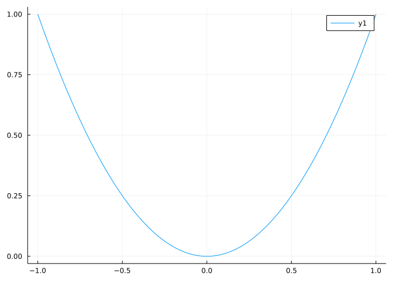
One can place both to get both points and lines. The scatter function will plot the points, but not connect the lines. In the following, the scatter! function is used. (Not the ! at the end.) This form adds the plot of the lines to the last graph, rather than make a new one.
xs = range(-2, 2, length=5)
ys = f.(xs)
plot(xs, ys)
scatter!(xs, ys, markersize=5)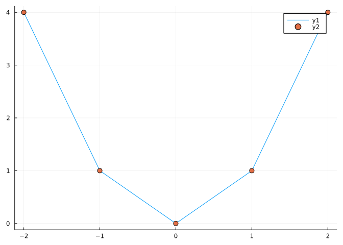
We use layering to plot two or more functions at once, though there are alternatives (plotting a vector of functions will do the same).
For example, to graph both the sine and cosine function we have:
plot(sin, 0, 2pi)
plot!(cos)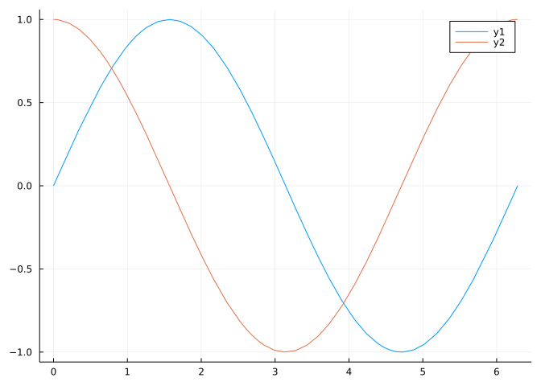
Or to compare the effects of a simple transformation:
f(x) = x^2
g(x) = 15 + f(x-3)
plot(f, -10, 10)
plot!(g)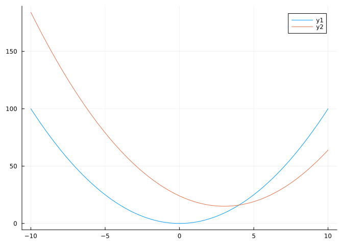
To print a heavier \(x\)-axis, we can graph the function \(y=0\), specified through the anonymous function x -> 0:
f(x) = x^2 - 2
plot(f, -2, 2)
plot!(x -> 0)
The above, may also be done with zero:
plot(f, -2, 2)
plot!(zero, -2, 2) # zero is a function returning 0, useful for programming in general.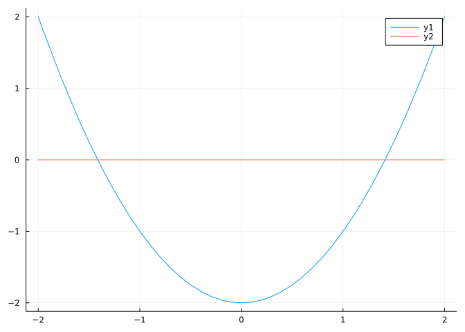
Often we wish to plot a function derived from another function. For example, this is used to add a secant line to a graph. The following function (which is in the MTH229 package) will create a function which represents the secant line of \(f(x)\) between two points, \(a\) and \(b\):
function secant(f, a, b)
m = (f(b) - f(a)) / (b-a) # slope of secant line
x -> f(a) + m * (x - a)
endPause for a moment to see what this function does. The first line simply finds the slope between the two points \((a,f(a))\) and \((b,f(b))\). The second does something with the point-slope form of a line using the point \((a, f(a))\). The tricky part is that last line defines an anonymous function to be returned (the x -> part). So secant is an operator – a function which accepts a function for an argument and returns a function.
Using this function makes it simple to add a secant line to a graph.
f(x) = sin(x)
a, b = 0, pi/2
plot(f, a, b)
plot!(secant(f, a, b))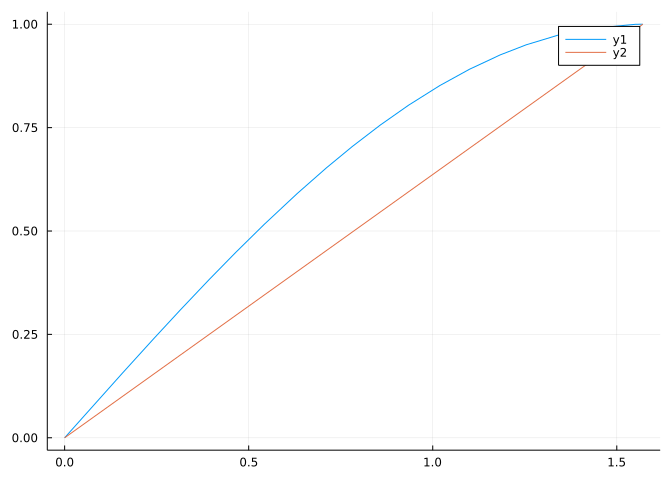
Define \(f(x)\) to be a triangular function as follows:
f(x) = max(0, 1.0 - abs(x))f (generic function with 1 method)In many applications, the following transformation is employed:
\[ g(x, c, h) = \frac{1}{h} f(\frac{x - c}{h}) \]
For constants \(h\) and \(c\).
Make a graph of both \(f(x)\) and \(g(x, 1, 1/2)\) over the interval \([-2,3]\). Consult the graph to see which statement is true?
We saw that this will produce two graphs:
plot(sin, 0, 2pi)
plot!(x -> cos(x) > 0 ? 0.0 : NaN)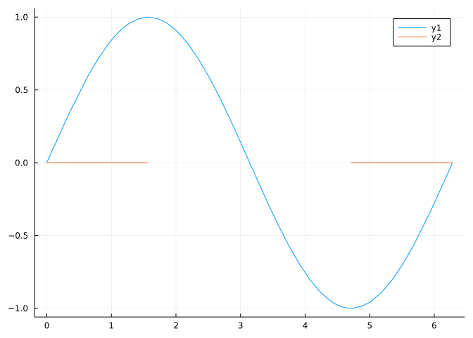
What is the sine curve doing when the flat line is drawn?
Make a graph of \(f(x) = x\), \(g(x) = \tan(x)\), and \(h(x) = \sin(x)\). Over the interval \([0,\pi/4]\). Based on this graph which of the following below seems correct?